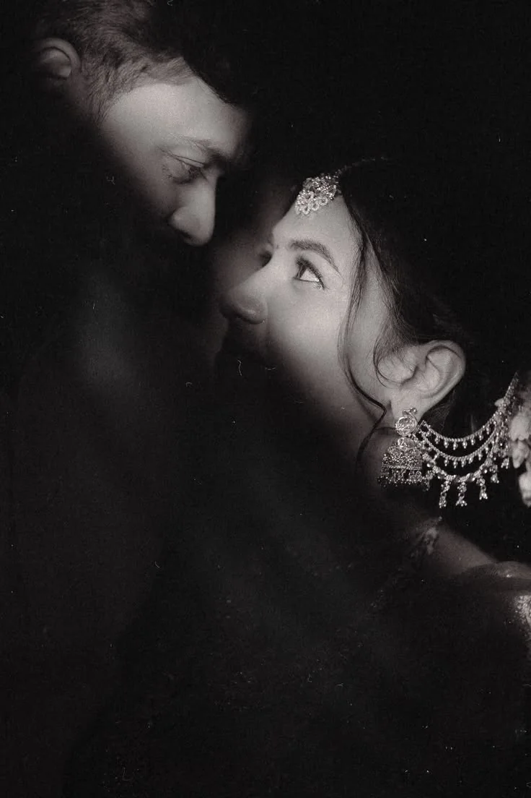

journaled memoirs
01 / 02
01
Anna Brenner
Lead Photographer
You walk away with photographs that act as journaled memoirs — ones you will cherish and relive forever.
Anna guides you with quiet prompts that naturally unlock genuine emotion, encouraging you to be entirely yourselves in front of the lens.
35mm Analog
Medium Format
Documentary